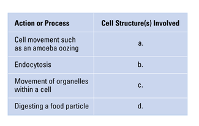
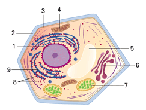
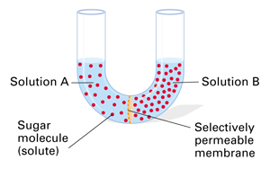

Reviewing Concepts
Multiple Choice
Choose the letter of the best answer.
1. A structure found in plant cells but not in animal cells is the
a. nucleus.
b. plasma membrane.
c. endoplasmic reticulum.
d. cell wall.
2. Which best describes the structure of a cell's plasma membrane?
a. proteins sandwiched between two layers of phospholipid
b. proteins embedded in two layers of phospholipid
c. phospholipids sandwiched between two layers of proteins
d. a layer of protein coating two layers of phospholipids
3. During diffusion, molecules move
a. from areas of lesser concentration to areas of greater concentration.
b. from areas of greater concentration to areas of lesser concentration.
c. by active transport.
d. only through selectively permeable membranes.
4. Which of the following is an incorrect match of organelle and function?
a. ribosome—protein synthesis
b. lysosome—digestion
c. Golgi apparatus—photosynthesis
d. plasma membrane—active transport
5. In mitochondria, chemical energy becomes available to cells through a process called
a. photosynthesis.
b. cellular respiration.
c. osmosis.
d. exocytosis.
6. Which best describes flagella?
a. thin, solid rods that aid cell motion
b. short, hair-like structures that propel a cell
c. long, whip-like structures that propel a cell
d. long, solid rods that anchor organelles
Short Answer
7. What are the three key ideas of the cell theory?
8. Identify the type of microscope most useful for viewing each of the following: a group of cells in a thin layer of onion skin; the details of the surface of a human hair; the detailed structure of a mitochondrion in a muscle cell.
9. What characteristics do eukaryotic cells share?
10. How does the structure of a phospholipid molecule contribute to the way such molecules are organized in a cellular membrane?
11. How is diffusion related to passive transport?
12. Describe how the structure of a plasma membrane is involved in facilitated diffusion.
13. What happens to an animal cell placed in a hypotonic environment? Explain.
14. What is the function of the Golgi apparatus?
15. How might a cell be affected if one of its lysosomes were to rupture?
16. What does photosynthesis accomplish?
17. Describe two different ways in which the motion of cilia can function in organisms.
Visualizing Concepts
18. Copy and complete the following table that lists cell structures and their functions.

Applying Concepts
Analyzing Information
19. Analyzing Diagrams Examine the diagram of the cell below and answer the following questions.
a. Is the diagram of a eukaryotic cell or a prokaryotic cell? Explain.
b. Which structure in the diagram carries out photosynthesis?
c. Name three processes that involve Structure 3.
d. Which structure manufactures proteins?
e. In which structure would you expect to find many newly produced molecules of ATP?
f. How are the functions of structures 9 and 6 related?

20. Analyzing Diagrams In the diagram below, a U-shaped glass tube contains two different sugar-water solutions. The solutions are separated by a selectively permeable membrane that sugar molecules cannot penetrate. Use the diagram to answer the questions that follow.
a. Which solution (A or B) contains a greater concentration of solute?
b. Predict the direction in which osmosis will occur. Explain your reasoning.
c. Draw a diagram of how the water levels in the tube will look at equilibrium.

Critical Thinking
21. Comparing and Contrasting How are active transport and facilitated diffusion different? How are they similar?
22. Relating Cause and Effect Explain how a protein inside the ER can be exported from the cell without ever crossing a membrane.
23. Making Generalizations Give examples of how structure and function are interdependent in a cell.
24. Evaluating the Impact of Research How have electron microscopes changed cell biology?
25. Evaluating Models How is the classroom-size scale model of cells that was described in this chapter helpful in understanding cell structure? What drawbacks does the model have?
26. What's Wrong With These Statements?
Briefly explain why each statement is inaccurate or misleading.
a. Cells are the same in all living things.
b. Molecules of a solution stop moving when concentration equilibrium is reached.
c. Ribosomes direct the activities of a cell because they produce proteins.
Performance Assessment
Design an Experiment Suppose you wanted to explore the effects of osmosis on plant cells. You peel a raw potato and cut it into rectangular blocks each about 3 cm x 1 cm x 1 cm. You place three pieces in a 15 percent salt solution, and three in distilled water. Predict how you think the potato pieces will change. What measurements would you include?